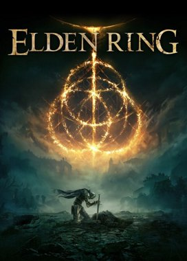
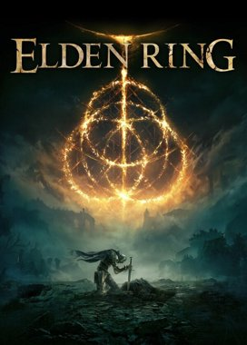
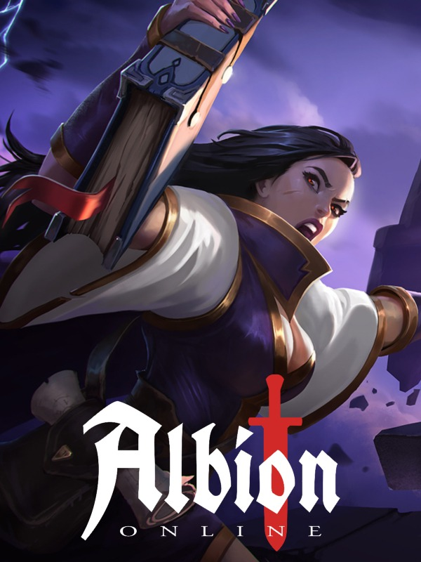
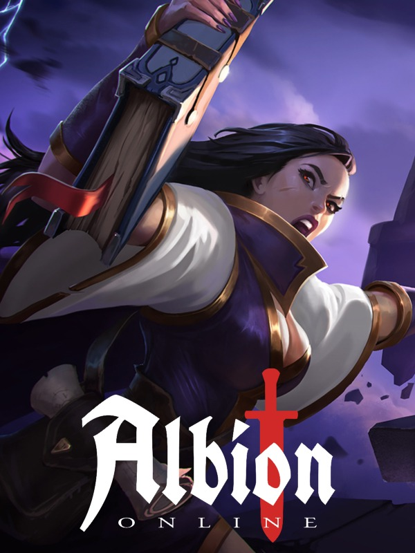

Lançamentos
Raft - The Final Chapter
Presos numa pequena jangada com nada mais que um gancho feito de plástico velho, os jogadores acordam num vasto, oceano azul totalmente só e sem terra à vista! Com a garganta seca e o estômago vazio, a sobrevivência não será fácil! A jangada lança-o a si e aos seus amigos numa aventura épica no grande mar aberto, com o objectivo de permanecer vivo, reunir recursos e construir você mesmo uma casa flutuante digna de sobrevivência. Os recursos são difíceis de encontrar no mar: Os jogadores terão de se certificar de apanhar os destroços que flutuam usando o seu gancho de confiança e, sempre que possível, procurar os recifes sob as ondas e as ilhas acima. Encontre as últimas partes da civilização ainda acima da água. Supere os desafios que aí se encontram, descubra a história dos seus anteriores habitantes e encontre o seu caminho para o próximo destino!
Avaliação:

Lançamentos
V Rising
Lute pela sua sobrevivência Acorde como um vampiro após séculos de sono profundo. Evite o sol enquanto você vai atrás de sangue para recuperar sua força. Reconstrua seu castelo e converta humanos em seus servos leais durante a sua missão para criar um império vampiro. Faça aliados e inimigos online ou jogue sozinho em seu próprio servidor, lute contra soldados e trave uma guerra nesse mundo de conflitos. Você se tornará o próximo Drácula? Um mundo aberto gótico Explore um mundo repleto de horrores e perigos míticos. Viaje por florestas exuberantes, campos abertos e cavernas sombrias para descobrir recursos valiosos, encontrando amigos e inimigos ao longo do caminho. Atravesse o mundo com vampiros aliados ou cace sozinho enquanto saqueia aldeias, ataca bandidos e mergulha nos domínios de feras sobrenaturais.
Avaliação:
Lançamentos
God of War
Adentre o reino nórdico Com a vingança contra os deuses do Olimpo em um passado distante, Kratos agora vive como um mortal no reino dos deuses e monstros nórdicos. É nesse mundo duro e implacável que ele deve lutar para sobreviver... e ensinar seu filho a fazer o mesmo. Tenha uma segunda chance Kratos é pai novamente. Como mentor e protetor de Atreus, um filho determinado a ganhar seu respeito, ele é forçado a encarar e controlar a fúria que há muito tempo o define enquanto viaja por um mundo ameaçador ao lado do filho. Viaje até um mundo sombrio e primitivo habitado por criaturas terríveis Do mármore e das colunas ornadas do Olimpo para as montanhas, cavernas e florestas sombrias do folclore nórdico pré-era viking, este é um reino claramente novo, com um panteão próprio de criaturas, monstros e deuses.
Avaliação:
Jogos em destaque
 

 



Notícias
Avaliações
-

Roberto
Adorei o jogo, simplesmente incrível!
12/03/2022
-
Maria
Maravilhoso, apaixonada com os gráficos.
21/02/2022
-
Sara
Amei a história e sou muito fã dos personagens.
15/04/2022
Contato
Deseja entrar em contato conosco?
clique aqui